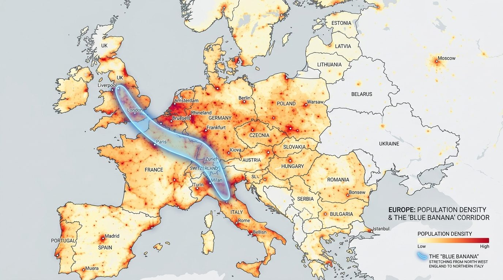

👥 La densité de population
Elle mesure le nombre d'habitants par kilomètre carré (hab./km²). En Europe, la population est très inégalement répartie : certaines zones sont presque vides (Grand Nord, hautes montagnes), tandis que d'autres concentrent d'immenses populations.
🍌 La Banane Bleue (Mégalopole)
C'est un corridor urbain courbe de forte densité qui s'étend de Londres à Milan. Il rassemble plus de 110 millions d'habitants, les plus grandes métropoles, des activités économiques majeures et des voies de communication très denses.
💡
Consigne : Analyse le fond de carte de la densité de population. Clique sur les pastilles pour découvrir les métropoles dans la Banane Bleue (en bleu) et hors de ce corridor (en orange).

Clique sur un point de la carte pour afficher sa fiche d'informations.